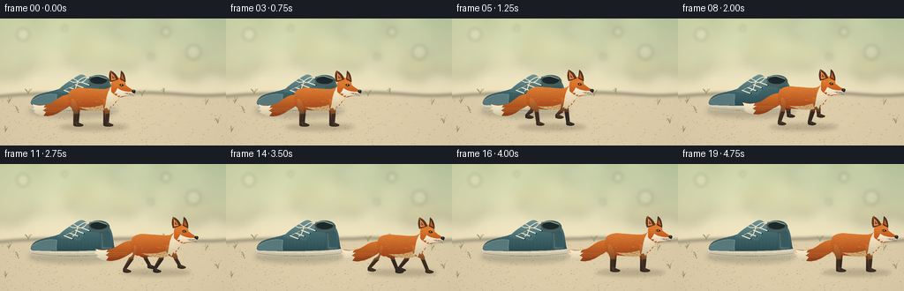
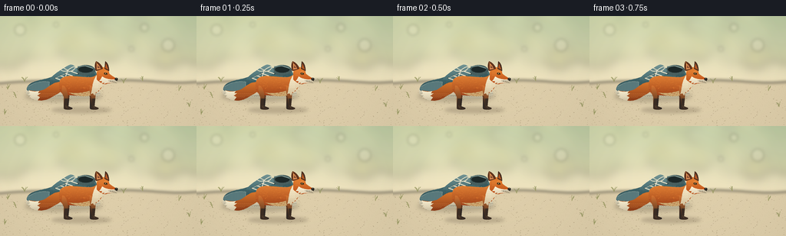

CODING AGENTS AS PIXEL WORLD MODELS
traex/GPT-6.1-Sol · dynamic_spatial_relationship_0027
点击播放 · 原生 RGB 像素
逐轮保存的候选
回放视频、检查图与代码变化。
每份候选均可单独播放。实际图片检查记录在下方工具轨迹中。
候选 01播放与检查图
点击播放 · 原生 RGB 像素


展开代码变化
--- 上一保存版本
+++ 本次保存版本
@@ -0,0 +1,208 @@
+from pathlib import Path
+import math
+import numpy as np
+from PIL import Image, ImageDraw, ImageFilter
+import artifact_io
+
+ROOT = Path(__file__).resolve().parent
+W,H,S = 256,144,4
+rng=np.random.default_rng(37)
+
+# Small, supersampled drawing primitives. All artwork is generated locally.
+def path_points(commands):
+ points=[]; cur=(0,0)
+ for c in commands:
+ if c[0]=='M': cur=(c[1],c[2]); points.append(cur)
+ elif c[0]=='L': cur=(c[1],c[2]); points.append(cur)
+ elif c[0]=='C':
+ p0=np.array(cur); p1=np.array(c[1:3]); p2=np.array(c[3:5]); p3=np.array(c[5:7])
+ for t in np.linspace(0,1,22)[1:]:
+ p=(1-t)**3*p0+3*(1-t)**2*t*p1+3*(1-t)*t*t*p2+t**3*p3
+ points.append(tuple(p))
+ cur=tuple(p3)
+ return points
+
+def poly(im,pts,fill): ImageDraw.Draw(im).polygon([(round(x*S),round(y*S)) for x,y in pts],fill=fill)
+def line(im,pts,fill,width=1): ImageDraw.Draw(im).line([(round(x*S),round(y*S)) for x,y in pts],fill=fill,width=max(1,round(width*S)),joint='curve')
+def ellipse(im,box,fill,outline=None,width=1): ImageDraw.Draw(im).ellipse(tuple(round(v*S) for v in box),fill=fill,outline=outline,width=max(1,round(width*S)))
+def shape(im,commands,color): poly(im,path_points(commands),color)
+
+def shaded(im,pts,top,bottom,seed=0,grain=1.5):
+ mask=Image.new('L',im.size); poly(mask,pts,255)
+ ys=np.array([p[1] for p in pts]); low,high=min(ys),max(ys)
+ yy=np.arange(H*S)[:,None]/S
+ f=np.clip((yy-low)/(high-low+1e-5),0,1)
+ colors=np.array(top)[None,None,:]*(1-f[:,:,None])+np.array(bottom)[None,None,:]*f[:,:,None]
+ colors=np.broadcast_to(colors,(H*S,W*S,3)).copy()
+ if grain:
+ noise=np.random.default_rng(seed % (2**32)).normal(0,grain,(H*S,W*S,1)); colors+=noise
+ layer=Image.fromarray(np.uint8(np.clip(colors,0,255)))
+ im.paste(layer,(0,0),mask)
+ return mask
+
+# Warm, softly focused meadow, giving the subjects a clear silhouette.
+y,x=np.mgrid[0:H*S,0:W*S]/S
+sky=np.zeros((H*S,W*S,3))
+for c,(a,b) in enumerate(zip((209,219,180),(245,228,192))): sky[:,:,c]=a+(b-a)*np.clip(y/105,0,1)
+light=np.exp(-((x-49)**2/15000+(y-13)**2/6000))
+sky+=light[:,:,None]*np.array([12,10,9])
+bg=Image.fromarray(np.uint8(np.clip(sky,0,255)))
+foliage=Image.new('RGBA',bg.size)
+for i in range(120):
+ xx=rng.uniform(-20,280); yy=rng.uniform(-15,55); rr=rng.uniform(5,24)
+ ellipse(foliage,(xx-rr,yy-rr*.7,xx+rr,yy+rr*.7),tuple(rng.choice([[119,143,102],[151,164,119],[174,181,128],[186,184,126]]))+ (int(rng.integers(30,95)),))
+foliage=foliage.filter(ImageFilter.GaussianBlur(7*S)); bg=Image.alpha_composite(bg.convert('RGBA'),foliage).convert('RGB')
+for xx,yy,rr in [(26,18,7),(188,15,5),(219,38,8),(73,11,3),(171,43,3)]:
+ glow=Image.new('RGBA',bg.size); ellipse(glow,(xx-rr,yy-rr,xx+rr,yy+rr),(255,249,219,50)); glow=glow.filter(ImageFilter.GaussianBlur(2*S)); bg=Image.alpha_composite(bg.convert('RGBA'),glow).convert('RGB')
+ground=Image.new('RGBA',bg.size)
+shape(ground,[('M',0,88),('C',57,82,109,87,154,84),('C',202,83,220,90,256,86),('L',256,144),('L',0,144)],(223,207,171,255))
+ground=ground.filter(ImageFilter.GaussianBlur(2*S)); bg=Image.alpha_composite(bg.convert('RGBA'),ground).convert('RGB')
+# Fine warm soil texture, rendered once and held perfectly still.
+a=np.array(bg).astype(float)
+noise=rng.normal(0,0.85,(H*S,W*S)); a+=noise[:,:,None]*np.clip((y-80)/45,0,1)[:,:,None]
+bg=Image.fromarray(np.uint8(np.clip(a,0,255)))
+for i in range(550):
+ xx=rng.uniform(0,256); yy=rng.uniform(89,144); r=rng.uniform(.12,.65)
+ c=tuple(int(z) for z in np.array([177,160,126])+rng.uniform(-6,35))
+ ellipse(bg,(xx-r,yy-r*.35,xx+r,yy+r*.35),c)
+for gx,gy in [(10,96),(21,107),(233,98),(247,119),(6,129),(161,88),(186,85),(32,86)]:
+ for j in range(5):
+ dx=rng.uniform(-4,4); h=rng.uniform(3,8)
+ line(bg,[(gx,gy),(gx+dx*.4,gy-h*.6),(gx+dx,gy-h)],(139+j*5,145+j*3,92+j*2),.45)
+
+# A stationary, visibly three-dimensional teal canvas sneaker.
+def shoe(im):
+ shadow=Image.new('RGBA',im.size); ellipse(shadow,(32,98,133,112),(70,61,45,61)); shadow=shadow.filter(ImageFilter.GaussianBlur(2.7*S)); im.paste(Image.alpha_composite(im.convert('RGBA'),shadow).convert('RGB'))
+ sole=[('M',34,96),('C',37,90,46,90,57,90),('L',126,91),('L',130,99),('C',132,105,125,107,116,108),('L',50,108),('C',41,107,35,104,34,101)]
+ shaded(im,path_points(sole),(245,237,210),(181,171,143),1)
+ upper=[('M',35,94),('C',38,84,56,84,66,80),('C',75,76,82,67,90,65),('C',96,63,103,73,109,74),('L',124,72),('C',128,77,128,91,130,96),('C',108,99,67,99,42,98),('C',37,98,34,98,35,94)]
+ mask=shaded(im,path_points(upper),(84,125,128),(39,72,79),2,2.3)
+ # Heel opening and soft padded rim.
+ ellipse(im,(99,64,124,78),(69,91,91)); ellipse(im,(102,66,121,74),(30,42,42))
+ line(im,[(101,66),(111,64.9),(121,68.2)],(129,153,146),1.3)
+ # Tongue and curved toe panel.
+ shaded(im,path_points([('M',64,83),('C',69,77,80,69,90,64),('C',95,62,100,67,101,72),('L',90,87)]),(116,149,149),(60,100,106),3)
+ shape(im,[('M',36,92),('C',46,85,58,85,64,86),('C',64,89,62,94,64,98),('L',42,98),('C',35,98,34,96,36,92)],(88,121,124))
+ line(im,path_points([('M',37,92),('C',47,85,58,85,64,86),('C',64,90,63,94,64,98)]),(150,171,161),.5)
+ shape(im,[('M',113,77),('L',123,75),('C',126,80,126,89,127,95),('L',114,97)],(54,87,91))
+ line(im,[(115,79),(116,95),(126,95)],(126,151,141),.6)
+ # Tiny canvas weave and stitching.
+ mr=np.array(mask)
+ for yy in np.arange(68,98,1.25):
+ for xx in np.arange(37,129,1.6):
+ if mr[int(yy*S),int(xx*S)]: line(im,[(xx,yy),(xx+.38,yy+.22)],(108,138,135),.12)
+ for j in range(4):
+ xx=72+j*6.4; yy=81-j*3.1
+ ellipse(im,(xx-1,yy-.9,xx+1,yy+.9),(25,53,57)); ellipse(im,(xx-.55,yy-.5,xx+.55,yy+.5),(184,185,156))
+ ellipse(im,(xx+9,yy+3,xx+11,yy+4.8),(23,48,51))
+ line(im,[(xx,yy),(xx+10,yy+3.8)],(235,227,200),1.35)
+ line(im,[(xx+.3,yy+.5),(xx+6,yy-2.5)],(206,199,175),.8)
+ line(im,path_points([('M',88,71),('C',80,66,77,66,79,70),('C',81,73,88,72,88,71),('C',96,64,100,66,97,69),('C',94,73,90,73,88,71)]),(231,225,197),1)
+ line(im,[(88,71),(85,80),(82,82)],(237,228,204),1)
+ line(im,path_points([('M',36,101),('C',60,105,105,105,130,101)]),(122,122,105),.55)
+ line(im,path_points([('M',38,99),('C',68,101,110,101,128,98)]),(255,247,221),.6)
+ for xx in np.arange(42,128,3): line(im,[(xx,105),(xx+.7,105)],(148,139,116),.45)
+
+shoe(bg)
+
+# A red fox: articulated limbs, fluffy fur, pointed ears and a white-tipped brush.
+def fox(im,cx,cy,phase,running,frame):
+ bob=(-1.7*math.cos(phase*2)) if running else 0
+ cy+=bob
+ def T(pts): return [(cx+x,cy+y) for x,y in pts]
+ def P(commands): return T(path_points(commands))
+ def F(commands,c): poly(im,P(commands),c)
+ def L(pts,c,w=.6): line(im,T(pts),c,w)
+ def E(box,c): ellipse(im,(cx+box[0],cy+box[1],cx+box[2],cy+box[3]),c)
+ shadow=Image.new('RGBA',im.size); ellipse(shadow,(cx-35,119,cx+43,127),(71,56,40,56)); shadow=shadow.filter(ImageFilter.GaussianBlur(2*S)); im.paste(Image.alpha_composite(im.convert('RGBA'),shadow).convert('RGB'))
+ # Far legs: alternating hip, knee, ankle and toe joints.
+ def leg(hx,hy,off,far=False):
+ p=phase+off
+ if running:
+ swing=math.sin(p); knee=(hx+8*swing,hy+11)
+ foot=(hx+15*swing,27-9*max(0,math.cos(p)))
+ else:
+ knee=(hx+1,hy+12); foot=(hx+2,27)
+ ank=(foot[0]-2,foot[1]-3)
+ limb=[('M',hx-4,hy-3),('C',hx+1,hy-4,knee[0]+3,knee[1]-3,knee[0]+2,knee[1]+1),('L',ank[0]+2,ank[1]),('L',foot[0]+5,foot[1]-1),('C',foot[0]+7,foot[1]+2,foot[0]-3,foot[1]+2,foot[0]-4,foot[1]),('L',ank[0]-2,ank[1]),('L',knee[0]-3,knee[1]),('C',hx-4,hy+9,hx-5,hy+2,hx-4,hy-3)]
+ pts=P(limb)
+ shaded(im,pts,(153,78,36) if far else (213,115,49),(42,36,32),10+int(hx),.7)
+ black=[('M',knee[0]-2,knee[1]+2),('L',knee[0]+2,knee[1]+2),('L',ank[0]+2,ank[1]),('L',foot[0]+5,foot[1]-1),('C',foot[0]+7,foot[1]+2,foot[0]-3,foot[1]+2,foot[0]-4,foot[1]),('L',ank[0]-2,ank[1])]
+ F(black,(48,40,35) if far else (59,45,35))
+ L([(ank[0],ank[1]-1),(foot[0],foot[1]-1),(foot[0]+4,foot[1])],(101,76,52),.6)
+ L([(foot[0]+2,foot[1]),(foot[0]+2,foot[1]+1)],(25,25,22),.4)
+ leg(-15,0,math.pi,True); leg(17,0,0,True)
+ # Bushy tail curls behind the rump, lightly swaying with the stride.
+ wag=math.sin(phase)*2 if running else math.sin(frame*.25)*.5
+ tail=[('M',-19,-7),('C',-33,-11,-40,2+wag,-48,3+wag),('C',-54,5+wag,-58,4+wag,-65,3+wag),('L',-63,7+wag),('L',-66,8+wag),('L',-62,10+wag),('L',-64,12+wag),('C',-51,19+wag,-42,17+wag,-33,11),('C',-25,6,-18,5,-19,-7)]
+ tm=shaded(im,P(tail),(218,119,44),(140,60,25),17)
+ tip=[('M',-51,4+wag),('L',-53,7+wag),('L',-49,7+wag),('L',-54,10+wag),('L',-50,12+wag),('L',-53,16+wag),('C',-57,16+wag,-60,14+wag,-64,12+wag),('L',-62,10+wag),('L',-66,8+wag),('L',-63,7+wag),('L',-65,3+wag),('C',-60,5+wag,-56,5+wag,-51,4+wag)]
+ shaded(im,P(tip),(251,241,210),(211,198,168),18)
+ for j in range(35):
+ xx=-59+(j%13)*2.5; yy=7+(j//13)*2+wag
+ if np.array(tm)[max(0,min(H*S-1,int((cy+yy)*S))),max(0,min(W*S-1,int((cx+xx)*S)))]:
+ L([(xx,yy),(xx-2,yy+1)],(226,145,75) if xx>-51 else (250,239,208),.25)
+ # Long torso, haunch and rising neck.
+ body=[('M',-25,-5),('C',-25,-15,-14,-17,-4,-15),('C',8,-15,16,-12,22,-16),('C',28,-20,33,-15,32,-6),('C',30,2,26,7,17,9),('C',5,12,-9,9,-18,9),('C',-23,7,-26,2,-25,-5)]
+ bm=shaded(im,P(body),(229,133,55),(160,66,25),20,1.25)
+ # Fur catches the light along the back; the belly is shaded cream.
+ F([('M',-13,6),('C',-3,8,10,6,19,2),('L',22,8),('C',10,13,-2,11,-13,6)],(205,171,116))
+ fur_rng=np.random.default_rng(41)
+ mb=np.array(bm)
+ for j in range(330):
+ xx=fur_rng.uniform(-25,29); yy=fur_rng.uniform(-17,10)
+ xi=int((cx+xx)*S); yi=int((cy+yy)*S)
+ if 0<=xi<W*S and 0<=yi<H*S and mb[yi,xi]>0:
+ length=fur_rng.uniform(.65,2.3); shade=int(fur_rng.integers(-14,20))
+ color=(min(255,213+shade),min(255,112+shade),max(0,44+shade//2)) if yy<1 else (167+shade,81+shade,35+shade//2)
+ L([(xx,yy),(xx-length,yy+length*.28)],color,.19)
+ leg(-17,0,0,False); leg(19,0,math.pi,False)
+ # White bib, tapering into the front legs with individual fur points.
+ bib=[('M',24,-17),('C',30,-17,33,-9,31,-2),('L',28,1),('L',29,4),('L',26,3),('L',25,7),('L',23,5),('L',21,10),('L',19,7),('L',16,8),('C',19,1,17,-7,24,-17)]
+ shaded(im,P(bib),(251,237,203),(213,194,157),23)
+ for j in range(16):
+ xx=21+(j%4)*1.6; yy=-11+(j//4)*3
+ L([(xx,yy),(xx-.7,yy+2.1)],(255,244,213),.3)
+ # Head profile and angular snout.
+ head=[('M',24,-17),('C',23,-23,28,-28,34,-27),('C',38,-27,40,-22,40,-19),('C',43,-16,47,-14,50,-12),('L',50,-9),('C',44,-7,41,-6,38,-6),('C',34,-3,28,-7,24,-11)]
+ shaded(im,P(head),(234,135,52),(186,78,26),25)
+ # Far ear, near ear, dark backs and softly lit inner ear.
+ F([('M',34,-25),('L',35,-35),('C',38,-33,40,-29,40,-22)],(74,47,32))
+ F([('M',35,-26),('L',36,-32),('L',39,-24)],(183,91,40))
+ F([('M',23,-22),('C',21,-25,21,-32,23,-35),('C',28,-33,31,-29,32,-25)],(99,53,30))
+ F([('M',24,-24),('L',24,-32),('C',27,-30,28,-27,29,-25)],(233,150,88))
+ F([('M',25,-26),('L',25,-30),('L',28,-26)],(131,78,53))
+ L([(23,-34),(24,-32),(24,-28)],(254,176,97),.45)
+ cheek=[('M',31,-15),('C',34,-13,39,-11,46,-11),('L',50,-11),('L',50,-9),('C',43,-6,38,-7,36,-6),('L',33,-5),('L',34,-7),('L',30,-6),('L',31,-9),('L',27,-9),('C',29,-11,30,-13,31,-15)]
+ shaded(im,P(cheek),(255,243,215),(223,210,179),29)
+ # Black nose, dark almond eye and amber iris, restrained highlights.
+ F([('M',48,-13),('C',52,-14,52,-11,50,-9),('L',47,-11)],(36,34,29))
+ E((48.8,-12.4,50,-11.9),(153,149,129))
+ L([(49,-9.4),(43,-8.5),(39,-9.2)],(89,66,45),.45)
+ F([('M',33,-19),('C',35,-21,37,-20,38,-18),('C',36,-17,34,-17,33,-19)],(44,36,27))
+ E((35,-19.7,36.8,-17.7),(181,124,35)); E((35.9,-19.5,36.7,-17.9),(20,25,20)); E((35.1,-19.4,35.7,-18.9),(255,240,192))
+ L([(33,-21),(36,-22),(38,-21)],(247,174,88),.45)
+ for j in range(11):
+ xx=27+(j%4)*2; yy=-21+(j//4)*2.1
+ L([(xx,yy),(xx+1.5,yy+.6)],(243,159,75),.24)
+ for j in range(3): L([(41,-10+j*.7),(48+j,-9+j*1.4)],(97,87,66),.18)
+
+frames=[]
+for i in range(20):
+ im=bg.copy()
+ if i<4: cx=102; run=False; phase=0
+ elif i<=15:
+ t=(i-3)/12
+ smooth=t*t*(3-2*t)
+ cx=102+96*smooth; run=True; phase=(i-4)*2.35+.3
+ else: cx=198; run=False; phase=0
+ fox(im,cx,94,phase,run,i)
+ # Gentle corner falloff, shared by all frames.
+ out=im.resize((W,H),Image.Resampling.LANCZOS)
+ ar=np.asarray(out).astype(float)
+ gy,gx=np.mgrid[0:H,0:W]
+ falloff=1-.045*((gx-127.5)/165)**2-.035*((gy-70)/115)**2
+ ar*=falloff[:,:,None]
+ frames.append(np.uint8(np.clip(ar,0,255)))
+artifact_io.save(np.stack(frames),ROOT)
+print('Saved 20 RGB frames, 256x144, 4 fps.')
可观测工具轨迹
实际执行的命令与返回图片。
命令 1exit 0
/bin/bash -lc 'ls -la && cat prompt.txt && cat GENERATION_RULES.md && cat task_spec.json'
命令 2exit 0
/bin/bash -lc "cat artifact_io.py && python - <<'PY' import importlib.util for p in ['numpy','PIL','aggdraw','cv2','scipy']: print(p, bool(importlib.util.find_spec(p))) PY"
命令 3exit 1
/bin/bash -lc "cat > generate.py <<'PY'
from pathlib import Path
import math
import numpy as np
from PIL import Image, ImageDraw, ImageFilter
import artifact_io
ROOT = Path(__file__).resolve().parent
W,H,S = 256,144,4
rng=np.random.default_rng(37)
# Small, supersampled drawing primitives. All artwork is generated locally.
def path_points(commands):
points=[]; cur=(0,0)
for c in commands:
if c[0]=='M': cur=(c[1],c[2]); points.append(cur)
elif c[0]=='L': cur=(c[1],c[2]); points.append(cur)
elif c[0]=='C':
p0=np.array(cur); p1=np.array(c[1:3]); p2=np.array(c[3:5]); p3=np.array(c[5:7])
for t in np.linspace(0,1,22)[1:]:
p=(1-t)**3*p0+3*(1-t)**2*t*p1+3*(1-t)*t*t*p2+t**3*p3
points.append(tuple(p))
cur=tuple(p3)
return points
def poly(im,pts,fill): ImageDraw.Draw(im).polygon([(round(x*S),round(y*S)) for x,y in pts],fill=fill)
def line(im,pts,fill,width=1): ImageDraw.Draw(im).line([(round(x*S),round(y*S)) for x,y in pts],fill=fill,width=max(1,round(width*S)),joint='curve')
def ellipse(im,box,fill,outline=None,width=1): ImageDraw.Draw(im).ellipse(tuple(round(v*S) for v in box),fill=fill,outline=outline,width=max(1,round(width*S)))
def shape(im,commands,color): poly(im,path_points(commands),color)
def shaded(im,pts,top,bottom,seed=0,grain=1.5):
mask=Image.new('L',im.size); poly(mask,pts,255)
ys=np.array([p[1] for p in pts]); low,high=min(ys),max(ys)
yy=np.arange(H*S)[:,None]/S
f=np.clip((yy-low)/(high-low+1e-5),0,1)
colors=np.array(top)[None,None,:]*(1-f[:,:,None])+np.array(bottom)[None,None,:]*f[:,:,None]
colors=np.broadcast_to(colors,(H*S,W*S,3)).copy()
if grain:
noise=np.random.default_rng(seed).normal(0,grain,(H*S,W*S,1)); colors+=noise
layer=Image.fromarray(np.uint8(np.clip(colors,0,255)))
im.paste(layer,(0,0),mask)
return mask
# Warm, softly focused meadow, giving the subjects a clear silhouette.
y,x=np.mgrid[0:H*S,0:W*S]/S
sky=np.zeros((H*S,W*S,3))
for c,(a,b) in enumerate(zip((209,219,180),(245,228,192))): sky[:,:,c]=a+(b-a)*np.clip(y/105,0,1)
light=np.exp(-((x-49)**2/15000+(y-13)**2/6000))
sky+=light[:,:,None]*np.array([12,10,9])
bg=Image.fromarray(np.uint8(np.clip(sky,0,255)))
foliage=Image.new('RGBA',bg.size)
for i in range(120):
xx=rng.uniform(-20,280); yy=rng.uniform(-15,55); rr=rng.uniform(5,24)
ellipse(foliage,(xx-rr,yy-rr*.7,xx+rr,yy+rr*.7),tuple(rng.choice([[119,143,102],[151,164,119],[174,181,128],[186,184,126]]))+ (int(rng.integers(30,95)),))
foliage=foliage.filter(ImageFilter.GaussianBlur(7*S)); bg=Image.alpha_composite(bg.convert('RGBA'),foliage).convert('RGB')
for xx,yy,rr in [(26,18,7),(188,15,5),(219,38,8),(73,11,3),(171,43,3)]:
glow=Image.new('RGBA',bg.size); ellipse(glow,(xx-rr,yy-rr,xx+rr,yy+rr),(255,249,219,50)); glow=glow.filter(ImageFilter.GaussianBlur(2*S)); bg=Image.alpha_composite(bg.convert('RGBA'),glow).convert('RGB')
ground=Image.new('RGBA',bg.size)
shape(ground,[('M',0,88),('C',57,82,109,87,154,84),('C',202,83,220,90,256,86),('L',256,144),('L',0,144)],(223,207,171,255))
ground=ground.filter(ImageFilter.GaussianBlur(2*S)); bg=Image.alpha_composite(bg.convert('RGBA'),ground).convert('RGB')
# Fine warm soil texture, rendered once and held perfectly still.
a=np.array(bg).astype(float)
noise=rng.normal(0,0.85,(H*S,W*S)); a+=noise[:,:,None]*np.clip((y-80)/45,0,1)[:,:,None]
bg=Image.fromarray(np.uint8(np.clip(a,0,255)))
for i in range(550):
xx=rng.uniform(0,256); yy=rng.uniform(89,144); r=rng.uniform(.12,.65)
c=tuple(int(z) for z in np.array([177,160,126])+rng.uniform(-6,35))
ellipse(bg,(xx-r,yy-r*.35,xx+r,yy+r*.35),c)
for gx,gy in [(10,96),(21,107),(233,98),(247,119),(6,129),(161,88),(186,85),(32,86)]:
for j in range(5):
dx=rng.uniform(-4,4); h=rng.uniform(3,8)
line(bg,[(gx,gy),(gx+dx*.4,gy-h*.6),(gx+dx,gy-h)],(139+j*5,145+j*3,92+j*2),.45)
# A stationary, visibly three-dimensional teal canvas sneaker.
def shoe(im):
shadow=Image.new('RGBA',im.size); ellipse(shadow,(32,98,133,112),(70,61,45,61)); shadow=shadow.filter(ImageFilter.GaussianBlur(2.7*S)); im.paste(Image.alpha_composite(im.convert('RGBA'),shadow).convert('RGB'))
sole=[('M',34,96),('C',37,90,46,90,57,90),('L',126,91),('L',130,99),('C',132,105,125,107,116,108),('L',50,108),('C',41,107,35,104,34,101)]
shaded(im,path_points(sole),(245,237,210),(181,171,143),1)
upper=[('M',35,94),('C',38,84,56,84,66,80),('C',75,76,82,67,90,65),('C',96,63,103,73,109,74),('L',124,72),('C',128,77,128,91,130,96),('C',108,99,67,99,42,98),('C',37,98,34,98,35,94)]
mask=shaded(im,path_points(upper),(84,125,128),(39,72,79),2,2.3)
# Heel opening and soft padded rim.
ellipse(im,(99,64,124,78),(69,91,91)); ellipse(im,(102,66,121,74),(30,42,42))
line(im,[(101,66),(111,64.9),(121,68.2)],(129,153,146),1.3)
# Tongue and curved toe panel.
shaded(im,path_points([('M',64,83),('C',69,77,80,69,90,64),('C',95,62,100,67,101,72),('L',90,87)]),(116,149,149),(60,100,106),3)
shape(im,[('M',36,92),('C',46,85,58,85,64,86),('C',64,89,62,94,64,98),('L',42,98),('C',35,98,34,96,36,92)],(88,121,124))
line(im,path_points([('M',37,92),('C',47,85,58,85,64,86),('C',64,90,63,94,64,98)]),(150,171,161),.5)
shape(im,[('M',113,77),('L',123,75),('C',126,80,126,89,127,95),('L',114,97)],(54,87,91))
line(im,[(115,79),(116,95),(126,95)],(126,151,141),.6)
# Tiny canvas weave and stitching.
mr=np.array(mask)
for yy in np.arange(68,98,1.25):
for xx in np.arange(37,129,1.6):
if mr[int(yy*S),int(xx*S)]: line(im,[(xx,yy),(xx+.38,yy+.22)],(108,138,135),.12)
for j in range(4):
xx=72+j*6.4; yy=81-j*3.1
ellipse(im,(xx-1,yy-.9,xx+1,yy+.9),(25,53,57)); ellipse(im,(xx-.55,yy-.5,xx+.55,yy+.5),(184,185,156))
ellipse(im,(xx+9,yy+3,xx+11,yy+4.8),(23,48,51))
line(im,[(xx,yy),(xx+10,yy+3.8)],(235,227,200),1.35)
line(im,[(xx+.3,yy+.5),(xx+6,yy-2.5)],(206,199,175),.8)
line(im,path_points([('M',88,71),('C',80,66,77,66,79,70),('C',81,73,88,72,88,71),('C',96,64,100,66,97,69),('C',94,73,90,73,88,71)]),(231,225,197),1)
line(im,[(88,71),(85,80),(82,82)],(237,228,204),1)
line(im,path_points([('M',36,101),('C',60,105,105,105,130,101)]),(122,122,105),.55)
line(im,path_points([('M',38,99),('C',68,101,110,101,128,98)]),(255,247,221),.6)
for xx in np.arange(42,128,3): line(im,[(xx,105),(xx+.7,105)],(148,139,116),.45)
shoe(bg)
# A red fox: articulated limbs, fluffy fur, pointed ears and a white-tipped brush.
def fox(im,cx,cy,phase,running,frame):
bob=(-1.7*math.cos(phase*2)) if running else 0
cy+=bob
def T(pts): return [(cx+x,cy+y) for x,y in pts]
def P(commands): return T(path_points(commands))
def F(commands,c): poly(im,P(commands),c)
def L(pts,c,w=.6): line(im,T(pts),c,w)
def E(box,c): ellipse(im,(cx+box[0],cy+box[1],cx+box[2],cy+box[3]),c)
shadow=Image.new('RGBA',im.size); ellipse(shadow,(cx-35,119,cx+43,127),(71,56,40,56)); shadow=shadow.filter(ImageFilter.GaussianBlur(2*S)); im.paste(Image.alpha_composite(im.convert('RGBA'),shadow).convert('RGB'))
# Far legs: alternating hip, knee, ankle and toe joints.
def leg(hx,hy,off,far=False):
p=phase+off
if running:
swing=math.sin(p); knee=(hx+8*swing,hy+11)
foot=(hx+15*swing,27-9*max(0,math.cos(p)))
else:
knee=(hx+1,hy+12); foot=(hx+2,27)
ank=(foot[0]-2,foot[1]-3)
limb=[('M',hx-4,hy-3),('C',hx+1,hy-4,knee[0]+3,knee[1]-3,knee[0]+2,knee[1]+1),('L',ank[0]+2,ank[1]),('L',foot[0]+5,foot[1]-1),('C',foot[0]+7,foot[1]+2,foot[0]-3,foot[1]+2,foot[0]-4,foot[1]),('L',ank[0]-2,ank[1]),('L',knee[0]-3,knee[1]),('C',hx-4,hy+9,hx-5,hy+2,hx-4,hy-3)]
pts=P(limb)
shaded(im,pts,(153,78,36) if far else (213,115,49),(42,36,32),10+int(hx),.7)
black=[('M',knee[0]-2,knee[1]+2),('L',knee[0]+2,knee[1]+2),('L',ank[0]+2,ank[1]),('L',foot[0]+5,foot[1]-1),('C',foot[0]+7,foot[1]+2,foot[0]-3,foot[1]+2,foot[0]-4,foot[1]),('L',ank[0]-2,ank[1])]
F(black,(48,40,35) if far else (59,45,35))
L([(ank[0],ank[1]-1),(foot[0],foot[1]-1),(foot[0]+4,foot[1])],(101,76,52),.6)
L([(foot[0]+2,foot[1]),(foot[0]+2,foot[1]+1)],(25,25,22),.4)
leg(-15,0,math.pi,True); leg(17,0,0,True)
# Bushy tail curls behind the rump, lightly swaying with the stride.
wag=math.sin(phase)*2 if running else math.sin(frame*.25)*.5
tail=[('M',-19,-7),('C',-33,-11,-40,2+wag,-48,3+wag),('C',-54,5+wag,-58,4+wag,-65,3+wag),('L',-63,7+wag),('L',-66,8+wag),('L',-62,10+wag),('L',-64,12+wag),('C',-51,19+wag,-42,17+wag,-33,11),('C',-25,6,-18,5,-19,-7)]
tm=shaded(im,P(tail),(218,119,44),(140,60,25),17)
tip=[('M',-51,4+wag),('L',-53,7+wag),('L',-49,7+wag),('L',-54,10+wag),('L',-50,12+wag),('L',-53,16+wag),('C',-57,16+wag,-60,14+wag,-64,12+wag),('L',-62,10+wag),('L',-66,8+wag),('L',-63,7+wag),('L',-65,3+wag),('C',-60,5+wag,-56,5+wag,-51,4+wag)]
shaded(im,P(tip),(251,241,210),(211,198,168),18)
for j in range(35):
xx=-59+(j%13)*2.5; yy=7+(j//13)*2+wag
if np.array(tm)[max(0,min(H*S-1,int((cy+yy)*S))),max(0,min(W*S-1,int((cx+xx)*S)))]:
L([(xx,yy),(xx-2,yy+1)],(226,145,75) if xx>-51 else (250,239,208),.25)
# Long torso, haunch and rising neck.
body=[('M',-25,-5),('C',-25,-15,-14,-17,-4,-15),('C',8,-15,16,-12,22,-16),('C',28,-20,33,-15,32,-6),('C',30,2,26,7,17,9),('C',5,12,-9,9,-18,9),('C',-23,7,-26,2,-25,-5)]
bm=shaded(im,P(body),(229,133,55),(160,66,25),20,1.25)
# Fur catches the light along the back; the belly is shaded cream.
F([('M',-13,6),('C',-3,8,10,6,19,2),('L',22,8),('C',10,13,-2,11,-13,6)],(205,171,116))
fur_rng=np.random.default_rng(41)
mb=np.array(bm)
for j in range(330):
xx=fur_rng.uniform(-25,29); yy=fur_rng.uniform(-17,10)
xi=int((cx+xx)*S); yi=int((cy+yy)*S)
if 0<=xi<W*S and 0<=yi<H*S and mb[yi,xi]>0:
length=fur_rng.uniform(.65,2.3); shade=int(fur_rng.integers(-14,20))
color=(min(255,213+shade),min(255,112+shade),max(0,44+shade//2)) if yy<1 else (167+shade,81+shade,35+shade//2)
L([(xx,yy),(xx-length,yy+length*.28)],color,.19)
leg(-17,0,0,False); leg(19,0,math.pi,False)
# White bib, tapering into the front legs with individual fur points.
bib=[('M',24,-17),('C',30,-17,33,-9,31,-2),('L',28,1),('L',29,4),('L',26,3),('L',25,7),('L',23,5),('L',21,10),('L',19,7),('L',16,8),('C',19,1,17,-7,24,-17)]
shaded(im,P(bib),(251,237,203),(213,194,157),23)
for j in range(16):
xx=21+(j%4)*1.6; yy=-11+(j//4)*3
L([(xx,yy),(xx-.7,yy+2.1)],(255,244,213),.3)
# Head profile and angular snout.
head=[('M',24,-17),('C',23,-23,28,-28,34,-27),('C',38,-27,40,-22,40,-19),('C',43,-16,47,-14,50,-12),('L',50,-9),('C',44,-7,41,-6,38,-6),('C',34,-3,28,-7,24,-11)]
shaded(im,P(head),(234,135,52),(186,78,26),25)
# Far ear, near ear, dark backs and softly lit inner ear.
F([('M',34,-25),('L',35,-35),('C',38,-33,40,-29,40,-22)],(74,47,32))
F([('M',35,-26),('L',36,-32),('L',39,-24)],(183,91,40))
F([('M',23,-22),('C',21,-25,21,-32,23,-35),('C',28,-33,31,-29,32,-25)],(99,53,30))
F([('M',24,-24),('L',24,-32),('C',27,-30,28,-27,29,-25)],(233,150,88))
F([('M',25,-26),('L',25,-30),('L',28,-26)],(131,78,53))
L([(23,-34),(24,-32),(24,-28)],(254,176,97),.45)
cheek=[('M',31,-15),('C',34,-13,39,-11,46,-11),('L',50,-11),('L',50,-9),('C',43,-6,38,-7,36,-6),('L',33,-5),('L',34,-7),('L',30,-6),('L',31,-9),('L',27,-9),('C',29,-11,30,-13,31,-15)]
shaded(im,P(cheek),(255,243,215),(223,210,179),29)
# Black nose, dark almond eye and amber iris, restrained highlights.
F([('M',48,-13),('C',52,-14,52,-11,50,-9),('L',47,-11)],(36,34,29))
E((48.8,-12.4,50,-11.9),(153,149,129))
L([(49,-9.4),(43,-8.5),(39,-9.2)],(89,66,45),.45)
F([('M',33,-19),('C',35,-21,37,-20,38,-18),('C',36,-17,34,-17,33,-19)],(44,36,27))
E((35,-19.7,36.8,-17.7),(181,124,35)); E((35.9,-19.5,36.7,-17.9),(20,25,20)); E((35.1,-19.4,35.7,-18.9),(255,240,192))
L([(33,-21),(36,-22),(38,-21)],(247,174,88),.45)
for j in range(11):
xx=27+(j%4)*2; yy=-21+(j//4)*2.1
L([(xx,yy),(xx+1.5,yy+.6)],(243,159,75),.24)
for j in range(3): L([(41,-10+j*.7),(48+j,-9+j*1.4)],(97,87,66),.18)
frames=[]
for i in range(20):
im=bg.copy()
if i<4: cx=102; run=False; phase=0
elif i<=15:
t=(i-3)/12
smooth=t*t*(3-2*t)
cx=102+96*smooth; run=True; phase=(i-4)*2.35+.3
else: cx=198; run=False; phase=0
fox(im,cx,94,phase,run,i)
# Gentle corner falloff, shared by all frames.
out=im.resize((W,H),Image.Resampling.LANCZOS)
ar=np.asarray(out).astype(float)
gy,gx=np.mgrid[0:H,0:W]
falloff=1-.045*((gx-127.5)/165)**2-.035*((gy-70)/115)**2
ar*=falloff[:,:,None]
frames.append(np.uint8(np.clip(ar,0,255)))
artifact_io.save(np.stack(frames),ROOT)
print('Saved 20 RGB frames, 256x144, 4 fps.')
PY
python generate.py"命令 4exit 0
/bin/bash -lc "python - <<'PY'
p='generate.py'
s=open(p).read().replace('np.random.default_rng(seed).normal','np.random.default_rng(seed % (2**32)).normal')
open(p,'w').write(s)
PY
python generate.py"命令 5exit 0
/bin/bash -lc "python - <<'PY'
from pathlib import Path
import numpy as np
from PIL import Image
p=Path('.')
a=np.load(p/'pixels.npz')['pixels']
assert a.shape==(144,256,20)
assert len(list((p/'frames').glob('*.png')))==20
for f in (p/'frames').glob('*.png'):
im=Image.open(f)
assert im.mode=='RGB' and im.size==(256,144)
assert (p/'index.html').exists()
print('Verified: all 20 RGB frames and required playback artifacts exist.')
PY"保存候选 1 份；完成命令 5 次；可验证图片返回 0 张。原始 API 响应与完整日志保留在本地。